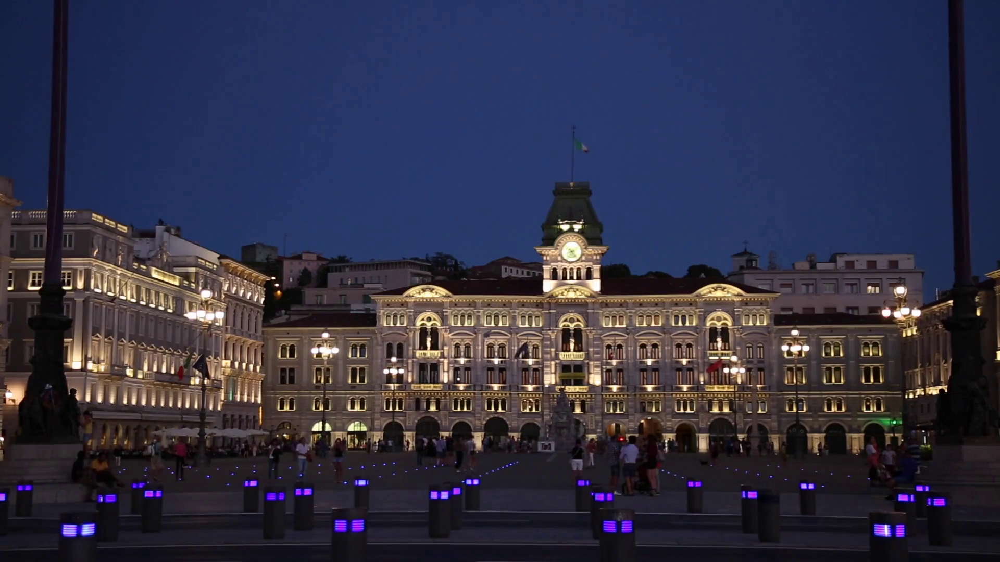

About the city
Tumbling down to the Adriatic from a wild plateau and almost
entirely surrounded by Slovenia, Trieste is physically isolated from
the rest of the Italian peninsula. The city blossomed under the 18th-
and 19th-century Habsburgs; Vienna's seaside salon was also a
fluid borderland where Italian, Slavic, Jewish, Germanic and even
Greek culture intermingled.
Discover the city by scrolling through the sections of this page!
Here is my cinematic video about Trieste:
Main Attractions
- Castello di Miramare
- Piazza dell'Unità d'Italia
- Castello di San Giusto
- Caffè San Marco
- Borgo Teresiano
Photo from www.videoblocks.com
Castello di Miramare (Miramare Castle)
The Miramare Castle is a 19th-century castle on the Gulf of Trieste,
located in northeastern Italy. It was built from 1856 to 1860 for
Austrian Archduke Ferdinand Maximilian and his wife, Charlotte of
Belgium, later Emperor Maximilian I and Empress Carlota of Mexico,
based on a design by Carl Junker.
The castle's grounds include an extensive cliff and seashore park of
54 acres designed by the archduke. The grounds were
completely re-landscaped to feature numerous tropical species of
trees and plants.
Piazza dell'Unità d'Italia
Piazza dell'Unità d'Italia is the main square in Trieste, a seaport city in northeast Italy. Located at the foot of the hill with the castle of San Giusto, the square faces the Adriatic Sea. It is often said to be Europe's largest square located next to the sea. The square was built during the period when Trieste was the most important seaport of the Austrian-Hungarian Empire and includes the city's municipal buildings and other important palaces.
Tips
- Cut waiting times at museums by booking tickets online
- Avoid renting a car for city travel (take public transportation)
- Don't always rely on credit cards (some places only accept cash)
- Learning a few Italian words and expressions can be very helpful